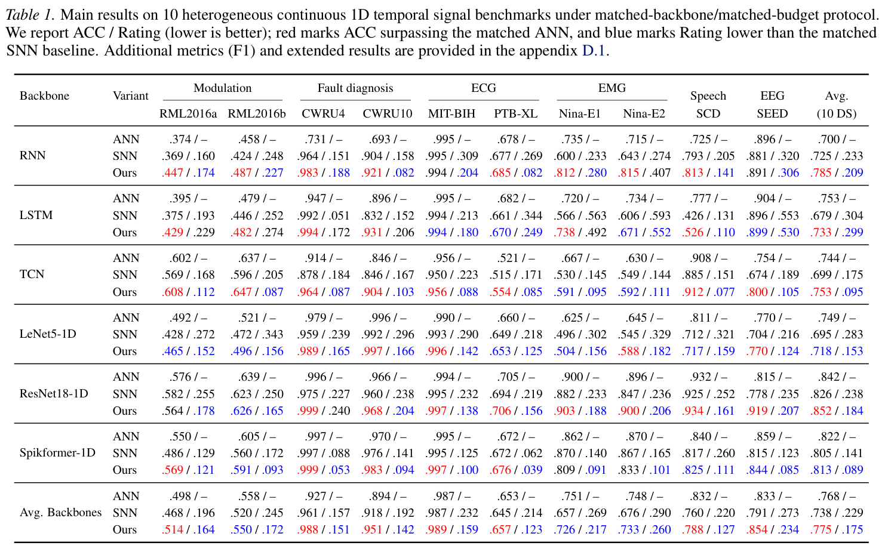
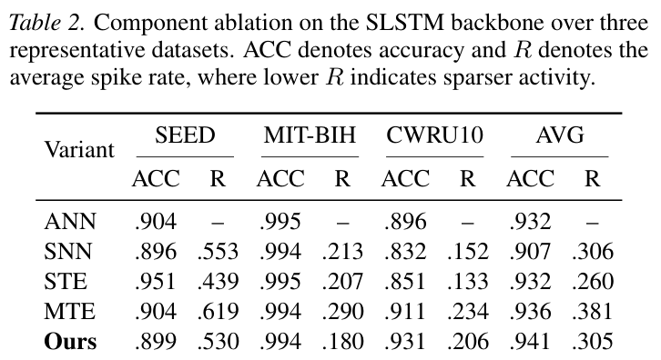

论文导读
Narrowing the ANN–SNN Gap for Continuous 1D Temporal Signal Classification with Multi-Scale Temporal Encoding and Sparsity-Regularized Transform Encoding
Proceedings of the 43rd International Conference on Machine Learning, 306 · 116587-116606
以多尺度时间编码补充短时间窗中的有效信息，再用稀疏变换编码压缩冗余放电，改善连续一维信号分类的精度与脉冲活动率。
研究问题
短时间窗 SNN 需要在有限推理步数中保留时间证据，同时控制冗余放电。直接重复输入不能充分利用连续信号自身的多尺度时间结构。
方法
MTE 将输入组织为多尺度时间流，并配置与尺度对应的多比特整数脉冲；STE 以分析变换、训练期重建和稀疏正则学习脉冲编码。推理时移除重建分支，仅保留前向编码路径。
技术路线
- Continuous 1D input
接收调制、振动、生理或语音等连续一维信号片段。
- MTE
构造多尺度时间流，通过尺度对齐的整数脉冲提高每步信息密度。
- STE
以变换编码与稀疏正则控制内部表示和脉冲活动。
- Short-horizon readout
默认 T=4，聚合多步输出；重建分支只参与训练。
证据
- 评估范围
- 10 datasets · T=4
覆盖六类任务；在匹配骨干与训练预算的协议下比较。
- 平均分类精度
- 73.8% → 77.5%
原文表 1：跨骨干平均；匹配 ANN 的平均精度为 76.8%。
- 平均脉冲活动率
- 0.229 → 0.175
原文表 1 的 Rating；属于算法效率代理，不是硬件实测功耗。

MTE×STE 编码框架
原文图 2：从连续信号、多尺度输入流到可插拔 STE 和分类读出。
先增加短时间窗中的有效证据，再压缩内部冗余放电。
图源：Proceedings of the 43rd International Conference on Machine Learning, 306, 116587-116606 (2026)。 © 2026 作者。
查看原图

十个数据集的匹配实验
原文表 1：同时列出 ANN、基础 SNN 与 MTE×STE 的 ACC / Rating。
总体平均精度提高、活动率降低，同时保留逐骨干与逐任务差异。
图源：Proceedings of the 43rd International Conference on Machine Learning, 306, 116587-116606 (2026)。 © 2026 作者。
查看原图

组件消融
原文表 2：比较 SLSTM 上的 ANN、SNN、STE、MTE 与组合方案。
MTE 增加时间证据也可能增加活动，STE 的作用需结合编码开销一起判断。
图源：Proceedings of the 43rd International Conference on Machine Learning, 306, 116587-116606 (2026)。 © 2026 作者。
查看原图结论与边界
在骨干和训练预算匹配的条件下，连续一维信号上的 ANN–SNN 平均精度差距较小；MTE 与 STE 的互补编码可进一步改善平均表现。
该工作把短时间窗下的输入信息密度与内部放电冗余联系起来，为调制识别、故障诊断和生理信号分类提供可插入多类骨干的编码方案。
- 从连续信号的时间证据积累出发分析短时间窗 ANN–SNN 差距。
- 以 MTE 提高输入证据密度，以 STE 控制变换编码中的冗余活动。
- 在十个数据集和多类骨干上报告匹配实验、组件消融及效率估算。
先读图 2 的编码路径，再对照表 1 的跨骨干平均与逐任务差异。77.5% 是总体平均结果，并不意味着每个数据集都超过 ANN。表 4 的 SOPs 与换算能耗是算法级估算；完整方案在该表中仍可能高于基础 SNN。
引用
Qi Sun, Yulei Huang, Zhen Cao, and Biao Hou. Narrowing the ANN–SNN Gap for Continuous 1D Temporal Signal Classification with Multi-Scale Temporal Encoding and Sparsity-Regularized Transform Encoding. Proceedings of the 43rd International Conference on Machine Learning, 2026, 116587-116606.
下载 BibTeX